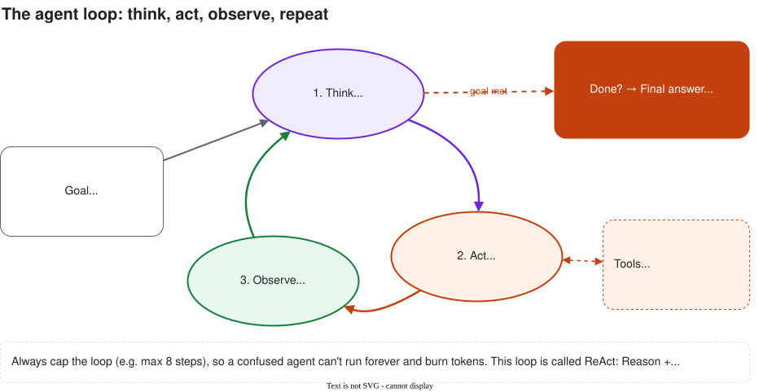

From Chatbots to Agents
Yesterday's CampusBuddy can talk: it answers from documents. Today we make it do things: check live data, make bookings, finish multi-step tasks. That's an agent. This session explains what agents are, how they work, and when you shouldn't use one.
1. Talking vs doing
Ask yesterday's CampusBuddy:
A chatbot or RAG bot can't do this. It needs to:
- Look up live data (the exam timetable), not a static FAQ.
- Decide what to do next based on what it found (the day before is a Sunday: is the library open?).
- Take an action in another system (book the room).
An AI agent is an LLM that can do all three: it works towards a goal by deciding which tools to use, using them, looking at the results, and repeating until the job is done.
2. From chatbot to agent: a spectrum
"Agent" isn't magic. It's the far end of a spectrum. The key question is: who decides the next step?

| Who decides the next step? | Example | |
|---|---|---|
| Chatbot | Nobody: question in, answer out | Session 3 CampusBuddy |
| RAG bot | Your code: always search, then answer | Session 4 CampusBuddy |
| Workflow | Your code: a fixed sequence, maybe with if/else | Classify a complaint → route it → draft a reply |
| Agent | The LLM: it picks tools in a loop until done | "Check my exam and book a library room" |
3. What makes an agent: four parts
4. The agent loop (ReAct), step by step
Almost every agent runs the same simple loop. It's called ReAct, short for Reason + Act (Yao et al., 2022):
- Think: the LLM looks at the goal and everything so far, and decides what to do next.
- Act: it picks a tool and the inputs. Your code runs the tool.
- Observe: the result goes back into the agent's memory.
- Repeat until the LLM decides the goal is met, then give the final answer.

A worked example
Goal: "When is my OS exam? If the library is open the day before, book me a study room for 2 hours in the morning."
| Step | What happens |
|---|---|
| 💭 Think | I need the OS exam date first. |
| 🛠️ Act | get_exam_date(subject="OS") |
| 👀 Observe | {"date": "2026-12-14", "time": "2 PM", "hall": "Hall A"} |
| 💭 Think | 14 Dec is a Monday, so the day before is Sunday 13 Dec. Is the library open then? |
| 🛠️ Act | get_library_hours(date="2026-12-13") |
| 👀 Observe | {"open": "10:00", "close": "16:00", "note": "Sunday opening in exam month"} |
| 💭 Think | It's open 10 to 4. Two hours in the morning means 10 to 12. Book it. |
| 🛠️ Act | book_study_room(date="2026-12-13", start="10:00", hours=2) |
| 👀 Observe | {"status": "confirmed", "room": "S3"} |
| 💭 Think | Goal met. Write the answer. |
| ✅ Answer | "Your OS exam is on Monday 14 Dec at 2 PM in Hall A. The library is open on Sunday 13 Dec (10 AM–4 PM, exam-month timings), so I booked study room S3 from 10 AM to 12 PM." |
The loop in code (a preview)
The whole idea fits in a few lines. In Session 7 you'll write the real version with function calling.
def run_agent(goal, tools, max_steps=8):
memory = [goal]
for step in range(max_steps): # always cap the loop!
decision = llm(memory, tools) # THINK: answer, or which tool?
if decision.is_final_answer:
return decision.text
result = tools[decision.tool](**decision.args) # ACT: your code runs the tool
memory.append((decision, result)) # OBSERVE: remember the result
return "Sorry, I couldn't finish that. Please contact the office."5. Tools
A tool is just a function the agent is allowed to call. You describe it to the LLM with a name, a description (when to use it), and its inputs.
get_exam_date with subject="OS"". Your code runs it and sends back the result. So your code is always in control, and that's where you add permissions and checks (Session 5).
| Tool for CampusBuddy | What it does | Risk |
|---|---|---|
search_faq(question) | The Session 4 RAG search | Read-only, low |
get_exam_date(subject) | Looks up the live timetable | Read-only, low |
get_library_hours(date) | Opening hours for a date | Read-only, low |
calculator(expression) | Exact maths (LLMs can slip on arithmetic) | Low |
book_study_room(date, start, hours) | Makes a booking | Changes data: medium |
send_email(to, subject, body) | Emails someone | High: ask a human first |
Good tool descriptions matter as much as good prompts (Session 2). If the description is vague, the agent picks the wrong tool or the wrong inputs.
6. Memory and planning
Memory
- Short-term memory: everything in the current task: the goal, each thought, each tool result. It's the same "re-send the history" trick from Session 3, so long tasks get expensive.
- Long-term memory: facts saved for next time ("Priya is in 3rd-year CSE and prefers morning slots"), stored in a database or vector store (Session 4) and retrieved when needed.
Planning
- Step by step (ReAct): decide one step at a time. Simple and flexible.
- Plan first: write a full plan, then execute it. Better for long tasks; the plan can be shown to a human first.
- Reflection: after finishing, check the work ("Did I actually book the room? Is the time right?") and fix mistakes.
7. Workflows vs agents, and when not to use an agent
Agents are exciting, so it's tempting to make everything an agent. Don't. A useful rule from practitioners: use the simplest thing that works, and only add agent-style freedom when you need it.

| Workflow | Agent | |
|---|---|---|
| Steps | Fixed, written by you | Chosen by the LLM at run time |
| Good for | Known, repeatable tasks | Open-ended tasks with an unknown number of steps |
| Cost and speed | Predictable, usually cheaper and faster | More LLM calls: slower and costlier |
| Testing | Easy: same path every time | Harder: different path each time |
| Risk | Low: it can only do what you coded | Higher: it might choose a wrong or harmful action |
Common workflow patterns you'll see (no agent needed):
- Chaining: one LLM call's output feeds the next (summarise → translate → format).
- Routing: classify the input, then send it to the right handler (Session 2's complaint router).
- Parallel: run several LLM calls at once and combine them (summarise 10 feedback forms together).
8. Agents in the real world
| Type | What it does | Examples |
|---|---|---|
| Coding agents | Read a codebase, edit files, run tests, fix bugs | Claude Code, GitHub Copilot's agent mode, Cursor |
| Research agents | Search the web many times, read sources, write a report | "Deep research" features in ChatGPT, Gemini and Claude |
| Customer support agents | Look up orders, issue refunds within limits, escalate to humans | Airlines, banks, e-commerce helpdesks |
| Computer-use agents | Click and type in a browser or app like a person | Browser agents that fill forms or book tickets |
Notice what they have in common: clear goals, well-defined tools, and limits on risky actions (refunds up to a limit, human escalation). That's the pattern to copy.
9. Activity: be the agent (10 min)
Groups of three. No laptops. One person is the User, one is the Agent (the LLM), one is the Tools.
- The User reads out one goal card.
- The Agent can't look anything up. They can only write Think lines on paper and ask the Tools person for an exact call, like
get_exam_date(subject="CN"). - The Tools person answers only from the tool cards below, exactly as written. Wrong format or unknown tool? Reply
ERROR. - The Agent writes a final answer. The User checks it.
Tool cards
| Tool | Data (the only answers allowed) |
|---|---|
get_exam_date(subject) | DBMS → Sat 12 Dec, 10 AM, Hall B · OS → Mon 14 Dec, 2 PM, Hall A · CN → Wed 16 Dec, 10 AM, Hall C · anything else → "not found" |
get_library_hours(date) | Mon–Sat: 8 AM–8 PM · Sunday in December: 10 AM–4 PM · Sunday in other months: closed |
book_study_room(date, start, hours) | Max 3 hours. Fails if the library is closed at that time. Otherwise: "confirmed, room S1" (then S2, S3...) |
calculator(expression) | The Tools person works it out exactly. |
Goal cards
- "Can I study in the library the evening before my CN exam? If yes, book 2 hours from 6 PM."
- "Book me a 4-hour study room the day before DBMS." (Watch what the agent does when a tool says no.)
- "How many days are there between my first and last exam?"
- "When is my Maths exam?" (Does the agent admit "not found", or make something up?)
book_study_room were send_email_to_all_students instead? (Session 5!)
Quick vote: agent or not?
1. Answer students' questions from the college handbook.
RAG bot. One search + one answer. No agent needed.2. Every morning at 8, summarise yesterday's complaints and email the principal.
Workflow. Same steps every day, on a schedule.3. Read each complaint, send it to the right department, and draft a reply.
Workflow (routing). Classify, then a fixed path per department.4. "Plan my study week around exams, lab slots and club events, and book library rooms."
Agent. Open-ended, several tools, the number of steps depends on what it finds.5. Find and fix a failing test in a large codebase.
Agent. It has to explore, try, run tests and retry: classic coding agent.6. Decide which students get the merit scholarship.
Not an autonomous agent. A decision about people: AI can help prepare the list, a human decides (Session 5).10. Recap
- Chatbots talk; agents do: they use tools and take actions towards a goal.
- The key question: who decides the next step? Your code (workflow) or the LLM (agent).
- Four parts: brain (LLM), tools, memory, actions.
- The ReAct loop: think → act → observe → repeat. Always cap the number of steps.
- The LLM only asks for a tool; your code runs it, so your code stays in control.
- Use the simplest thing that works. Workflows are cheaper, faster and easier to test. Use agents for open-ended tasks, with human approval for risky actions.
Quick quiz
1. What's the main difference between a workflow and an agent?
In a workflow, your code decides the steps. In an agent, the LLM decides the next step at run time, in a loop.2. Name the four parts of an agent.
Brain (LLM), tools, memory, actions.3. What do the three steps of the ReAct loop do?
Think (decide what to do next), Act (call a tool), Observe (add the result to memory). Repeat until done.4. Who actually runs a tool: the LLM or your code?
Your code. The LLM only says which tool and which inputs.5. Why should you always cap the agent loop?
So a confused agent can't loop forever, wasting time and money.6. Each step is 95% reliable. Roughly how reliable is a 10-step agent?
About 60% (0.9510 ≈ 0.6). That's why fewer steps and checks matter.7. "Send the exam timetable to all students every Monday." Agent or workflow?
Workflow: fixed steps on a schedule. No agent needed.Glossary
| Term | Meaning in one line |
|---|---|
| Agent | An LLM that works towards a goal by choosing and using tools in a loop. |
| Workflow | LLM calls and tools in a fixed order that your code decides. |
| Tool | A function the agent may ask your code to run. |
| Action | A tool call that changes something in the world (book, send, pay). |
| ReAct | Reason + Act: the think → act → observe loop. |
| Observation | The result of a tool call, fed back to the LLM. |
| Short-term memory | Everything in the current task: goal, thoughts, tool results. |
| Long-term memory | Facts saved for future tasks, usually in a database or vector store. |
| Planning | Working out the steps before (or while) doing them. |
| Reflection | The agent checking and correcting its own work. |
| Autonomy | How much the agent decides on its own, without a human. |
Learn more (free)
- Anthropic, Building effective agents (blog post on workflows vs agents)
- Yao et al., ReAct: Synergizing Reasoning and Acting in Language Models (2022)
- Lilian Weng, LLM Powered Autonomous Agents (blog post)
- Google, Agents whitepaper (Kaggle)
Instructor guide
Suggested plan for the 60 minutes. Press S in the slides to open speaker notes.
| Time | Segment | What to do |
|---|---|---|
| 0–5 min | Hook | Recap Day 1 in one line: CampusBuddy can talk. Read out the OS exam + library request. Ask: what's missing? |
| 5–12 min | Spectrum | Chatbot → RAG → workflow → agent. Keep asking "who decides the next step?" |
| 12–24 min | Four parts + ReAct | TA analogy. Walk through the worked example one row at a time; let the class predict the next Think. |
| 24–32 min | Tools, memory, planning | Stress: the LLM never runs the tool. Risk column in the tools table links back to Session 5. |
| 32–40 min | Workflows vs agents | Flowchart + the 0.9510 maths on the board. "Use the simplest thing that works." |
| 40–50 min | Be the agent | Groups of three, goal cards 1–4. Share: who guessed instead of calling a tool? |
| 50–57 min | Agent or not? | Hands-up vote on the six scenarios, then reveal. |
| 57–60 min | Recap | Preview Session 7: we write the real tool-calling loop in Python, then turn a tool into an MCP server. |